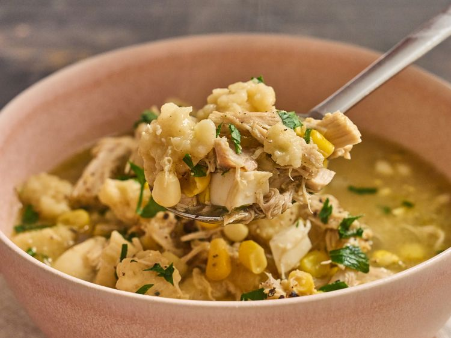

Dutch-Chicken-soup

Description
This easy Pennsylvania Dutch chicken soup uses rotisserie chicken, corn, chopped eggs, and homemade dumpling-like rivels, all cooked in a savory broth and ready in under an hour. Chicken and dumplings meets corn chowder in this cozy pot of comfort.
Ingredients
- 4 tablespoons butter
- 3 stalks celery, finely chopped
- 1 medium onion, finely chopped
- 2 teaspoons kosher salt, plus more to taste, divided
- 1/2 teaspoon pepper, plus more to taste
- 1/2 teaspoon poultry seasoning
- 2 quarts chicken stock
- 3 cups corn
- 3 cups shredded rotisserie chicken
- 2 large eggs, beaten
- 1 1/2 cups flour
- 1 tablespoon milk or broth, or more as needed
- 4 large hard boiled eggs, chopped
- 1/4 cup finely chopped fresh parsley
Steps
- Heat butter in a Dutch oven over medium-high heat. Add celery and onion and cook for 1 minute. Season with salt, pepper, and poultry seasoning. Cook until vegetables are tender, about 3 minutes longer.
- Stir in stock and corn and bring to a boil. Add chicken and simmer for 10 minutes.
- Meanwhile, prepare the rivels by stirring together eggs, flour, and remaining salt in a bowl until well combined. Add 1 to 2 tablespoons of milk or broth if needed to bring the dough together.
- Drop dime-sized balls of dough into the simmering soup and increase the heat if necessary to maintain a strong simmer. Add hard boiled eggs and continue to cook, stirring occasionally, until rivels are tender and cooked, about 15 minutes.
- Stir in parsley and adjust seasoning with salt and pepper if desired.
HOME